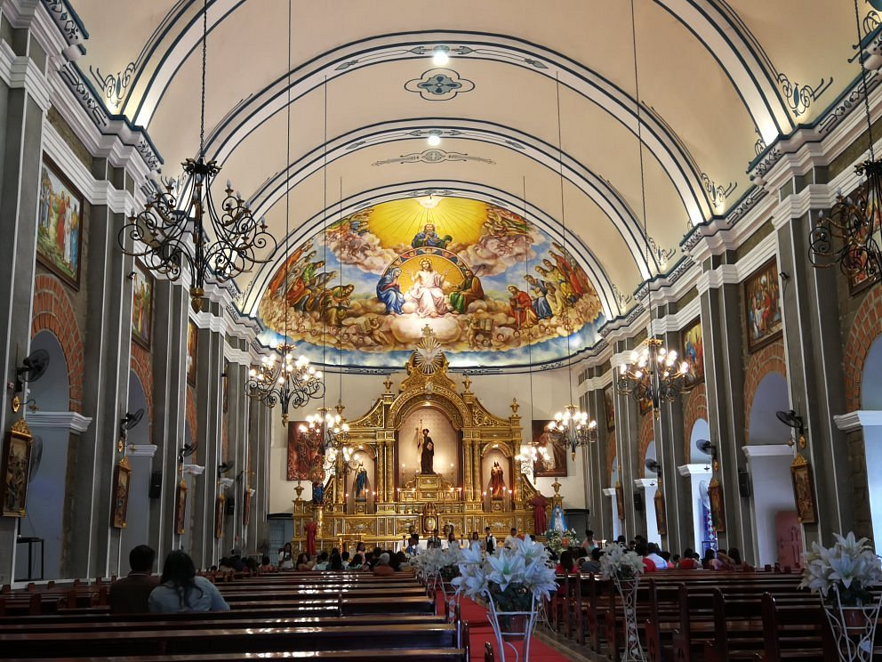

St. James the Great Parish Church, commonly known as Bolinao Church, is a historic Roman Catholic church located in the town of Bolinao, Pangasinan, Philippines. Built during the Spanish colonial era, it is dedicated to St. James the Great, one of the apostles of Jesus Christ, and stands as a key landmark of the town’s religious and cultural identity.
Fun Facts
- Built partly from coral stones gathered locally.
- Features thick walls designed to withstand earthquakes.
- Declared a National Cultural Treasure.
Historical Background

The church was established by Augustinian missionaries in the early 1600s, later managed by other religious orders including the Dominicans and Augustinian Recollects. Built primarily from coral stones sourced along the coast, it exemplifies Spanish colonial Baroque architecture adapted to local materials and conditions. The structure has withstood earthquakes and typhoons over centuries, reflecting the town’s resilience.
Architectural and Cultural Significance

The church features thick coral-stone walls and a commanding façade marked by pilasters and ornate niches. Its multi-tiered bell tower, partly rebuilt after earthquake damage, is one of the tallest in the region. Inside, the main altar houses an image of St. James the Great and retains the solemn atmosphere of colonial-era churches.
Beyond its architectural value, the church is central to Bolinao’s identity. The annual feast of St. James the Great on July 25 draws pilgrims and visitors, combining religious devotion with local celebration. The site forms part of Pangasinan’s heritage circuit and serves as a focal point for community gatherings and traditional processions.
According to local stories, pirates once threatened coastal towns, and villagers sought refuge inside the church’s thick walls, believing it to be a sanctuary of protection.